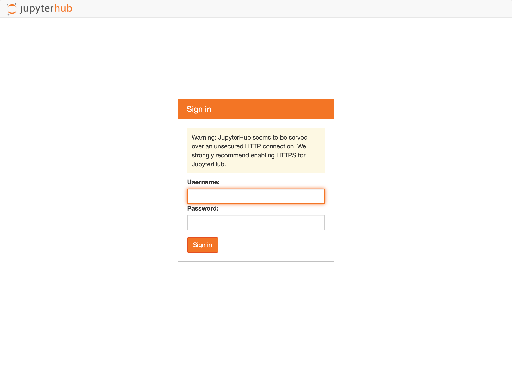
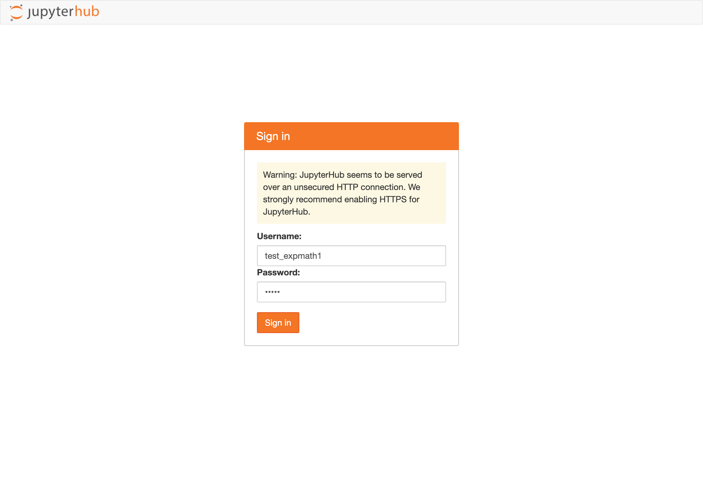
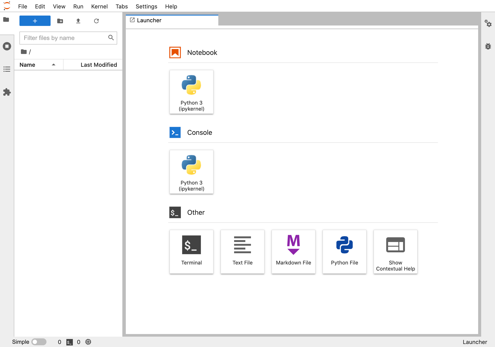
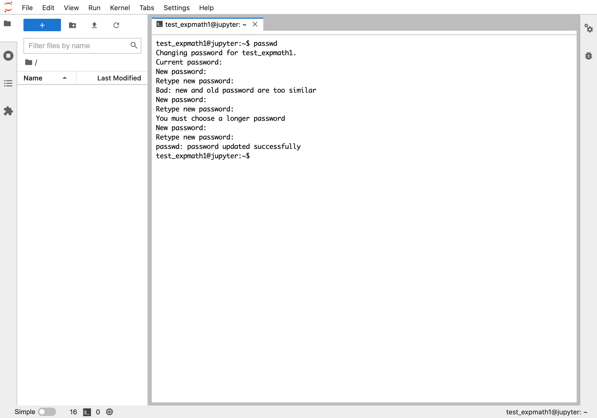
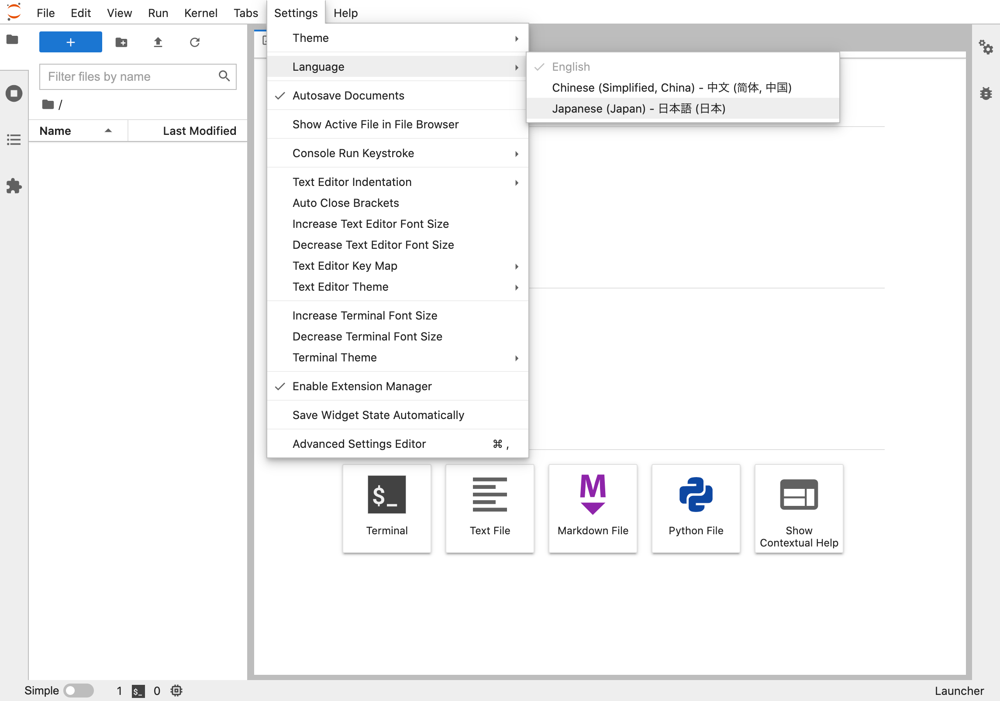
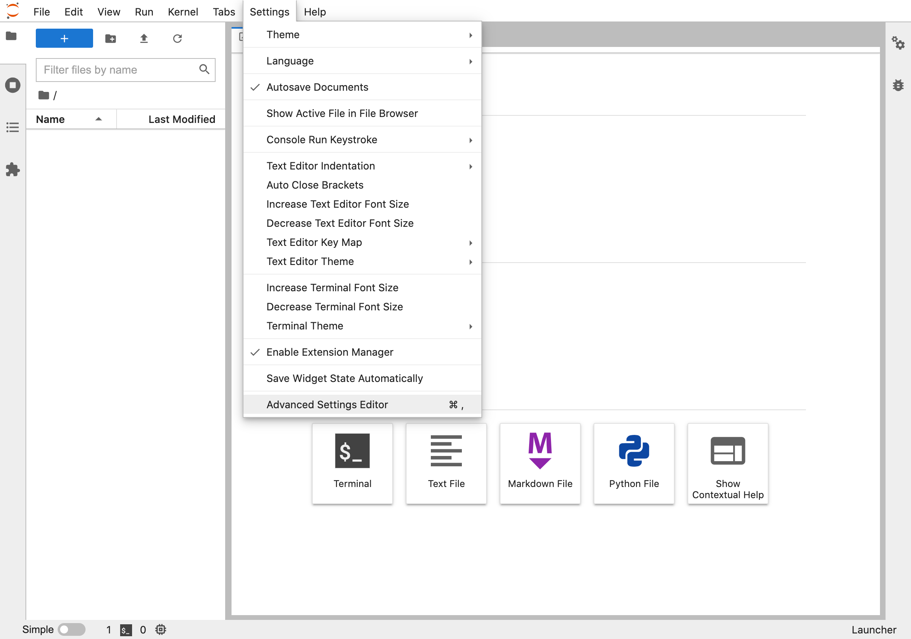
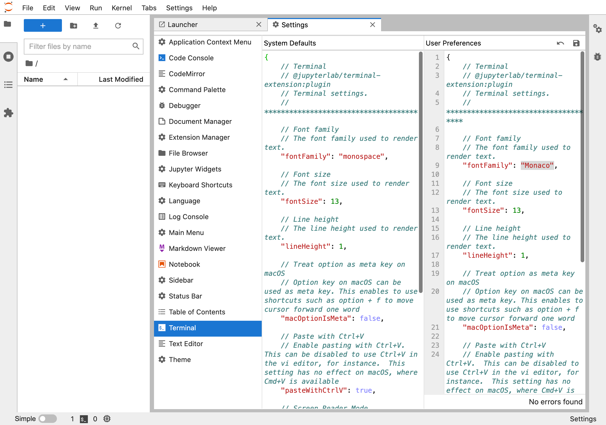
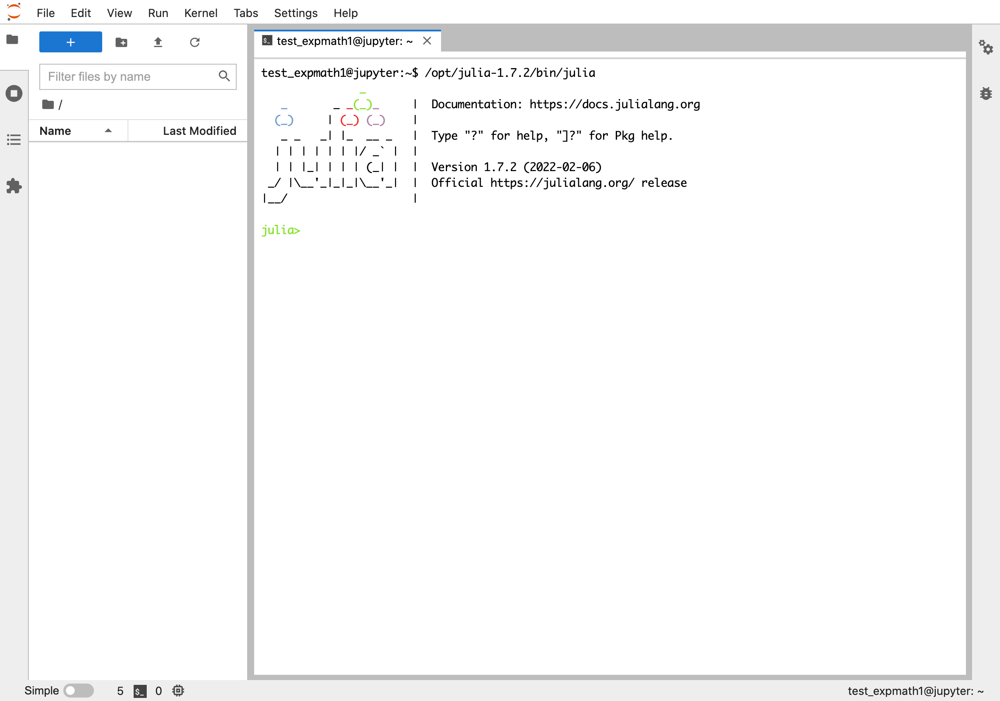
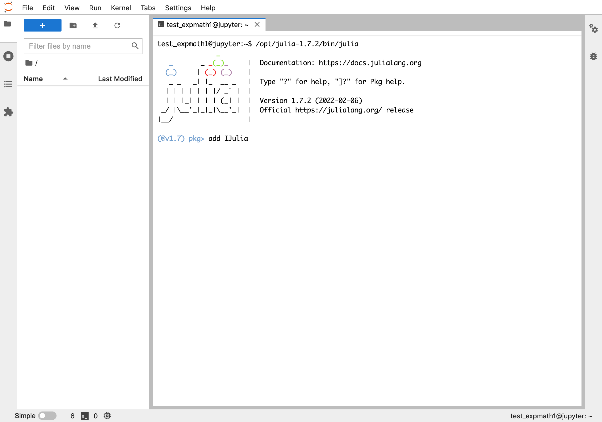
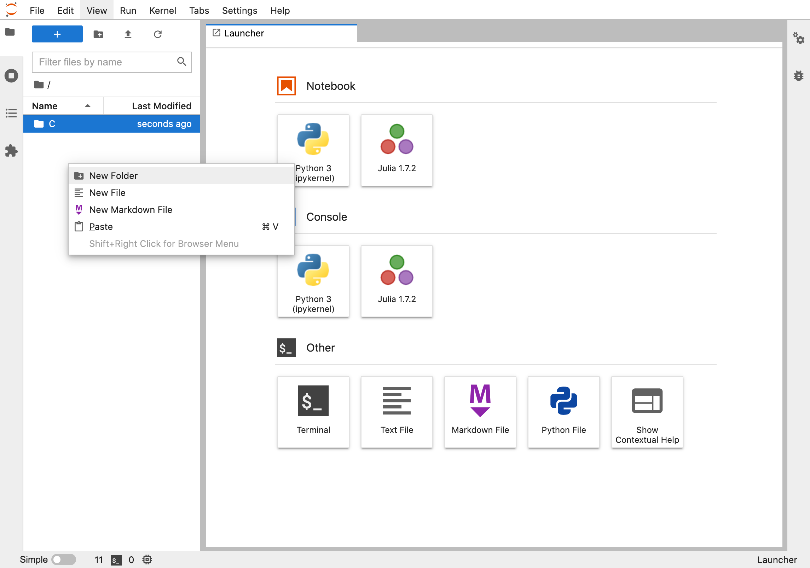

JupyterHub
ざっくりと言えば，（Julia を本格的に利用する際に導入してもらう予定の）JupyterLab というものを，みなさん個人の PC に整備するのではなく，私の研究室のサーバー上で整備したものに web アクセスして利用するものです（C 言語も Julia もどちらも利用できます）．他にも，Python3 や R 言語も利用可能ですので，興味のある学生は色々試してみるとよいでしょう．
アクセス方法
http://133.1.22.106/ にアクセスし，サインインします．希望者にはユーザーネームと初期パスワードを個別にお知らせします（申請方法は CLE を参照してください）．

ユーザーネームが「test_expmath1」の場合の例：

無事にサインインできると，次のような画面がでてきます．

初期パスワードの変更
初回ログイン時には，パスワードを変更しましょう．Launcher の Others の Terminal をクリックすると次のような画面がでてきます．
この画像のように passwd と書いてエンターキーを押せば，パスワードを変更できます．
まず，現在のパスワード（つまり初期パスワード）を聞かれるので入力してエンターキーを押します．
その後，新しいパスワードを入力してエンターキーを押すのを 2 回繰り返します．
その際，初期パスワードと近い文字列だったり，あるいは短すぎたりすると，この画面のように「これじゃだめ」という指示がでるので，そういうときは指示に沿った別のパスワードを設定してください．

日本語化
Jupyter の画面は基本的に全て英語ですが，一部を日本語に変えることもできます．

ターミナルのフォントを変更
おそらく，ターミナルのフォントが「初期パスワードの変更」のところの画像とは違っていると思います．フォントの変更は次のようにします．
まず，Settings → Advanced Settings Editor と進みます．

Application Context Menu で Terminal を選択すると，次のような画面が出てきます．
User Preference は { } となっているはずです．
System Defaults の内容を全て User Preference にコピーし，"fontFamily": "monospace" のところを変更すればフォントを変更できます．
画像は，私の設定例です．
変更したら，User Preference の右側にあるセーブボタンを忘れずに押してください．

Julia を notebook で使えるようになる
ターミナルを開き，/opt/julia-1.7.2/bin/julia と書いてエンターキーを押せば Julia が起動します．

なお，~/.bashrc の一番下に export PATH=/opt/Julia-1.7.2/bin:$PATH という 一行を追加して，source ~/.bashrc とすれば，単純に julia で Julia を起動できるようになります（上級者向け）．
次に，] を押して（一回押すと Julia> が (@v1.7) pkg> に変わり，もう一回押すと元に戻ります），add IJulia と書いてエンターキーを押します．

その後，もう一度 ] を押して Julia> に戻し，using IJulia と入力しエンターキーを押してください（スクリーンショットを撮るのを忘れました...）．その後，exit() + エンターキー で Julia を抜けてください．
Launcher に戻ると，次のように Notebook に Julia が追加されているはずです．クリックすると Notebook で Julia を使えます．

ターミナルで C 言語を使えます
ターミナルで C 言語を使うこともできます．C 言語 の mac or Linuc の場合とほぼ同様に使えます（gcc は最初から入っています）．